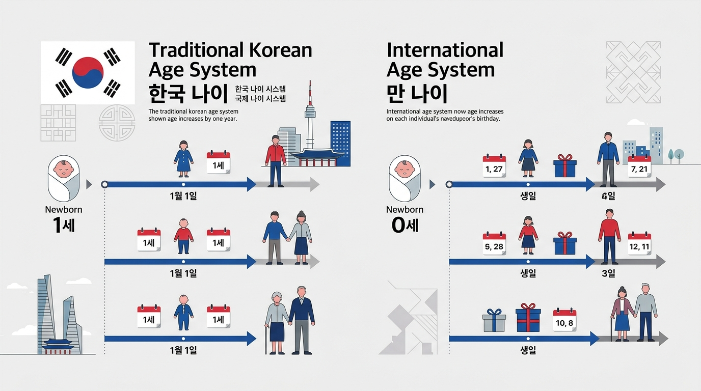

Calculate your exact age in years, months and days
Enter a birth date to calculate age today or on another date. See completed years, months and days, total days lived, and the next birthday.
- ✓ Calendar-aware results
- ✓ No account needed
- ✓ Calculated in your browser
Instant Age Calculator
Enter a birth date to see age today.
Calculation details receipt ▾
Table of Contents: Explore Age Calculator Lab
Quickly jump to calculation engines, clinical diagnostic tools, research guides, and mathematical proofs.
FIND THE RIGHT TOOL
What would you like to calculate?
Choose a task or search the calculator library. Each tool shows the dates it needs and the type of answer it provides.
Chronological Age Calculator
Calculate age on an assessment date and copy the result as years, months and days.
Age Difference Calculator
Compare two birth dates and see the calendar gap between them.
Corrected Age Calculator
Account for weeks of prematurity when calculating a baby's adjusted age.
Days Between Dates Calculator
Count elapsed days and choose whether the ending date is included.
Weeks Between Dates Calculator
Convert the day interval into complete weeks and remaining days.
Birthday Countdown Calculator
Find the next birthday date and the number of days remaining.
School Entry Calculator
Check age against a selected school-entry cutoff and its stated jurisdiction.
Years of Service Calculator
Measure the calendar interval between a start date and a reference date.
10,000 Days Old Calculator
Find the calendar date that falls 10,000 days after a birth date.
Dog Age Calculator
Explore an estimated human-age comparison using the selected model.
Gestational Age Calculator
Estimate pregnancy weeks and days from the inputs supported by the tool.
Date Difference Calculator
Compare two calendar dates in years, months and days.
SEE THE CALCULATION
Follow the dates behind your result
Calendar age is counted in completed years, then completed months, then remaining days. Follow a worked example to see how month lengths and leap-day conventions affect the result.
Everyday Interval: Jan 15, 2000 to Aug 20, 2026
Why Can Age Calculators Show Different Results?
If two tools produce differing numbers for the same dates, check their underlying conventions rather than assuming a calculation error:
Comparing age as of today versus an exact birthday or cutoff date determines if the final month or year has turned.
Measuring from January 31 to February 28 yields 1 calendar month under clamping, but differing days under fixed 30-day rules.
February 29 anniversaries fall on February 28 in common years under calendar rules, or March 1 under specific UK statutory laws.
Dividing elapsed days by 365.25 yields an average rate (decimal age), not a whole-year calendar anniversary.
Method note: These examples use this calculator's calendar convention. An assessment, school, employer, or public authority may require a different rule.
MORE THAN A BIRTHDAY
Discover the next milestone on your calendar
Find your birth weekday, your next 1,000-day milestone, and other memorable dates. Enter a birth date or use the one already entered above.
Every day is a full rotation of the Earth. In your lifetime so far, you have lived through over 233,000 hours of continuous calendar existence.
Estimated life statistics ▾
Born on a Saturday: According to traditional folklore, "Saturday's child works hard for a living" — symbolizing determination, grit, and grounded focus.
-
✓ Completed1,000 Days AliveOct 11, 2002
-
✓ Completed5,000 Days AliveSep 23, 2013
-
Upcoming10,000 Days (Jubilee)Jun 2, 2027
-
Upcoming1 Billion SecondsSep 23, 2031
ASSESSMENT RECORDS
Prepare age in Y;M;D format for an assessment
Enter the date of birth and assessment date to calculate chronological age. Copy the result as completed years, months and days, then check the calculation convention required by the assessment manual.
Calendar Borrowing Logic
When test days or months are less than birth values, borrow directly from the preceding calendar interval:
| Vector | Years | Months | Days |
|---|---|---|---|
| Test Date | 2026 | 09 | 17 |
| Date of Birth | 2016 | 11 | 25 |
| Net Age | 09 | 09 | 23 |
✓ Borrowed 31 days from August (preceding month) to compute (17 + 31) - 25 = 23 days.
✓ Borrowed 12 months from 2026 to compute (8 + 12) - 11 = 9 months.
PRETERM BIRTH
Compare chronological age and corrected age
Corrected age adjusts time since birth for the number of weeks a baby was born before 40 weeks of pregnancy. It can help explain developmental timing alongside guidance from the baby's clinician.
AAP parent guidance commonly uses corrected age when tracking development during the first two years. Individual follow-up may differ.
Open the corrected-age calculator →Prematurity & Corrected Age Calculator
Pediatric Rule: Compare motor & cognitive milestones against the Corrected Age marker (orange bar) rather than the chronological birth bar.
Calculated via UCSD DNA Methylation formula: HumanAge = 16 × ln(DogAge) + 31 and AAHA veterinary feline guidelines.
PET AGE EXPLAINED
Explore your pet's estimated human-age equivalent
Compare your pet's age using the selected species and calculation model. The result is an approximate comparison and does not measure an individual animal's health or biological age.
The canine logarithmic formula was derived from research primarily on Labrador retrievers. For cats, results reflect life-stage models from the American Animal Hospital Association (AAHA).
Guides & Rules Behind Every Calculation
Age calculations touch state education cutoffs, clinical developmental norms, Social Security claiming schedules, and spreadsheet functions. Explore our verified step-by-step guides explaining the arithmetic, boundary conditions, and legal statutes behind every result.

Korean Age vs International Age: What Changed?
Understand why traditional Korean age was 1–2 years higher, how birthday counting worked, and what South Korea's landmark 2023 legal reform changed.

How to Calculate Exact Age in Years, Months and Days
Step-by-step calendar interval math, manual day-borrowing arithmetic, and why dividing elapsed days by 365 or 30 always leads to errors.

School Entry & Kindergarten Cutoff Dates by State
50-state statutory cutoff matrix, universal transitional kindergarten (TK) rules, and birthday boundary verification for parents and districts.

Years of Service vs Years of Experience: Differences
How single-employer seniority, pension vesting schedules, and overall professional career tenure diverge in enterprise payroll and HR systems.

Corrected Age for Premature Babies: Clinical Guide
Subtracting weeks of prematurity from chronological age to track infant motor, cognitive, and physical milestones against true developmental baselines.

Leap-Day Birthdays: Ageing & Legal Anniversary
How common-year statutory laws (US, UK, and Commonwealth) determine legal majority and official birthday dates for February 29 leaplings.
INTERACTIVE TOOLS
Quick Policy & Formula Reference
Test local statutory kindergarten cutoff dates, Social Security full retirement milestones, or copy verified spreadsheet formulas.
Check a school-entry cutoff
Review the age rule for the selected location and school year. Confirm local enrollment requirements with the responsible district.
Look up Social Security full retirement age
Check the U.S. Social Security retirement-age schedule for a birth year and review how claiming age changes retirement benefits.
Calculate age in a spreadsheet
Start with completed years in Excel, then review month-end and leap-day conventions before building a years-months-days formula.
How Age Is Calculated: Complete Mathematical & Clinical Guide
Comprehensive answers to foundational calendar, legal, clinical, and mathematical questions, backed by verified day-borrowing algorithms, clinical psychometric standards, and direct links to our in-depth guides and calculators.
Formulas, Day-Borrowing Algorithms & Step-by-Step Calculation
What is chronological age?
Chronological age is the exact elapsed solar calendar duration between an individual's verified moment of birth and a designated reference date (such as today). It is recorded standardly in completed years, completed months, and completed days.
In clinical neuropsychology and educational diagnostics, chronological age is expressed in standardized semicolon format: Y;M;D (e.g., 14;06;22). Unlike biological or subjective age, chronological age is completely objective, deterministic across global time zones, and legally binding for civic rights and statutory eligibility.
How do you calculate age from a date of birth?
To calculate chronological age accurately, our engine normalizes both the birth date and target date to UTC midnight (eliminating Daylight Saving Time shifts) and executes a strict calendar day-borrowing subtraction:
- Day Subtraction: If target day < birth day, subtract 1 from target month and borrow the exact number of days in the preceding calendar month (28, 29, 30, or 31).
- Month Subtraction: If target month < birth month, subtract 1 from target year and add 12 to target month.
- Year Subtraction: Subtract birth year from adjusted target year.
How do I calculate my age manually step-by-step?
Here is a complete worked example showing how to compute exact calendar age without relying on an electronic calculator:
May 18, 1998 | Target Date = March 10, 2026
- Step 1 (Day Borrowing): Subtract days:
10 - 18 = -8(negative). Borrow 1 month from March. The preceding month (February 2026, a non-leap year) contains 28 days. Add 28 to target days:10 + 28 - 18 = 20 Days. - Step 2 (Month Borrowing): March (Month 3) became Month 2. Subtract months:
2 - 5 = -3(negative). Borrow 1 year (12 months) from 2026. Target months become2 + 12 = 14. Subtract birth month:14 - 5 = 9 Months. - Step 3 (Year Subtraction): Target year 2026 became 2025. Subtract birth year:
2025 - 1998 = 27 Years. - Final Verified Age: 27 Years, 9 Months, 20 Days (Clinical Notation:
27;09;20).
What is the formula for calculating age from a date of birth?
In spreadsheet environments such as Microsoft Excel and Google Sheets, exact chronological age in completed years, months, and days is calculated using the native DATEDIF function:
=DATEDIF(A2, TODAY(), "Y") & " yrs, " & DATEDIF(A2, TODAY(), "YM") & " mos, " & DATEDIF(A2, TODAY(), "MD") & " days"
Where cell A2 contains the date of birth. The "Y" token calculates completed whole years, "YM" calculates remaining calendar months, and "MD" yields remaining days.
Can I work backwards and find a birth date from an age?
Yes. To determine a birth date from a known age, subtract completed days, then calendar months, and finally whole years from the reference date.
The Calendar Ambiguity Window: Because calendar months contain varying day counts (28, 29, 30, or 31 days), reversing an age without knowing the exact reference date introduces an inherent ±1 to 3 day variance. Always anchor the calculation to the specific date on which the age was documented.
Calculating Age in Days, Hours, Minutes, Live Seconds & Month Units
How is age in days, hours, and seconds calculated?
Unlike calendar years and months (which vary in length), calculations in total days, hours, and seconds are anchored to immutable SI-defined time units:
- Total Days:
⌊(Target UTC Epoch − Birth UTC Epoch) / 86,400,000⌋. This accounts perfectly for all leap days across multiple decades. - Total Hours:
Total Days × 24 - Total Minutes:
Total Days × 1,440 - Total Seconds:
Total Days × 86,400
What does the live seconds-alive counter show?
The live seconds ticker on our calculator measures the exact wall-clock time elapsed since the midnight UTC baseline of your birth date. While standard chronological age increments only at midnight, the live counter updates every 1,000 milliseconds.
The 1-Billion-Seconds Milestone: A human being reaches their one-billionth second of life at approximately 31 years, 251 days, 13 hours, 46 minutes, and 40 seconds. Our tool highlights this milestone automatically.
Why does my age in months differ between calculators?
If you enter the same birth date into multiple online calculators, you may notice small discrepancies in your "total months old". This happens because different calculators use three distinct mathematical conventions:
| Calculation Convention | Formula / Logic | Where It Is Standardly Used |
|---|---|---|
| 1. Completed Calendar Months Used by Age Calculator Lab |
Increments only on the exact calendar day anniversary (e.g., Jan 15 to Feb 15 = 1.0 month). | Clinical pediatrics, legal eligibility, official documentation. |
| 2. Astronomical Solar Average | Total Days / 30.4375 (365.2425 days divided by 12 months). |
Actuarial demography and statistical population modeling. |
| 3. Commercial 30-Day Convention | Total Days / 30.0 (assumes uniform 360-day commercial year). |
Banking, corporate finance, bond coupon interest accrual. |
Chronological vs Biological Age, Statutory Cutoffs & Epigenetics
What is the difference between chronological age and biological age?
While chronological age tracks the absolute passage of calendar time, biological age (also termed phenotypic or physiological age) estimates how rapidly an individual's cells and tissues are deteriorating relative to statistical population averages.
- Measurement: Chronological age requires only verified birth records. Biological age is measured via epigenetic DNA methylation clocks (Horvath / Hannum algorithms), telomere length, arterial compliance, and blood biomarkers.
- Modifiability: Chronological age is completely immutable. Biological age can be accelerated by chronic stress, inflammation, and smoking, or decelerated through exercise, metabolic optimization, and restorative sleep.
When do you need an exact chronological age calculation?
An exact chronological age calculation down to the day is legally or clinically required across four primary environments:
- Statutory Cutoffs: Voting franchise (18), driver licensing (16), Medicare eligibility (65), and Social Security Full Retirement Age (FRA 66–67).
- School Entry Eligibility: Strict state cutoff dates (e.g., September 1 in California & Texas; December 31 in New York) where a single day shifts kindergarten matriculation by a full year.
- Psychometric Assessments: Diagnostic instruments (WISC-V, Bayley-4, Woodcock-Johnson) require exact
Y;M;Dto look up norm-referenced standard scores. - Pediatric Pharmacotherapy: Pediatric dosages (mg/kg) depend on exact completed weeks or months of life.
Are pet-age and life-statistic results exact?
The common belief that "1 dog year equals 7 human years" is a biological myth. Canine aging is nonlinear. Landmark research led by the University of California San Diego (UCSD) established that dog aging follows an epigenetic logarithmic trajectory based on DNA methylation:
Human Equivalent Age = 16 * ln(Dog Age in Years) + 31
Under this peer-reviewed formula, a 1-year-old dog has cellular development roughly equivalent to a 31-year-old human, but cellular aging decelerates significantly thereafter (a 4-year-old dog corresponds to approximately 53 human years). Furthermore, breed weight plays a major role: toy breeds (under 20 lbs) age slower in late life than giant breeds (over 90 lbs).
Leap Years, February 29 Birthdays & International Age Systems
How does the age calculator handle leap years?
Under the Gregorian calendar, a leap year occurs every year divisible by 4, except century years must be divisible by 400 (e.g., 2000 was a leap year; 1900 was not; 2100 will not be).
Our algorithm incorporates February 29 seamlessly into Unix Epoch timestamps and day-borrowing routines. When calculating age between dates spanning a leap year, February contributes 29 days to total days alive and borrowing math, ensuring complete mathematical fidelity.
How does the age calculator handle February 29 birthdays?
For individuals born on Leap Day (February 29), determining legal age in non-leap years depends on jurisdictional statute:
- UK & Common Law: Under the UK Family Law Reform Act 1969 (§9), a leap-day birthday legally advances on March 1st.
- US Legal Standards: Most states observe March 1st as legal attainment for contracts, alcohol purchase, and voting, while some DMV departments permit driving licensing on February 28th.
- Civil Law Jurisdictions: In Taiwan and parts of continental Europe, legal birthday celebration is observed on February 28th.
How is age counted differently around the world & Why might my Korean age differ?
Across history, distinct cultures developed alternative systems for calculating age:
South Korea's Landmark 2023 Legal Reform: On June 28, 2023, the South Korean government officially enacted a revised civil law mandating the **International Standard** (Man-nai) across administrative, contractual, and legal operations. Our Korean Age calculator displays both traditional counting age, year age (calendar year minus birth year), and official international age side-by-side.
How do I find my age on a specific past or future date?
To calculate chronological age on any historical or future anchor date, switch the target date mode on our main calculator from "Today" to "Specific Date" and select the desired calendar day:
- Historical Calculations: Verify exact age on wedding anniversaries, academic graduation ceremonies, military service enlistments, or insurance contract inception dates.
- Future Projections: Determine the exact day you reach statutory milestones (turning 18, 21, 50, 65, or 67), or plan school kindergarten eligibility years in advance.
Choosing the Right Calculator, Official Document Verification & Privacy
Which age calculator should I use?
Select the calculator matching your specific clinical, professional, or personal purpose:
- General Birthdays & Exact Milestones: Use the primary Chronological Age Calculator.
- Clinical & Psychological Scoring: Use the Clinical Assessment Engine for standardized
Y;M;Dnotation and borrowing audit trails. - Premature Infants (< 24 Months): Use the Corrected Age Module to adjust for gestational prematurity.
- Employment & Pension Vesting: Use the Years of Service Calculator.
- Raw Calendar Duration: Use the Date Difference Calculator.
How is this age calculator different from generic online calculators?
Age Calculator Lab was engineered to address common flaws in generic calculation portals:
- 100% In-Browser Memory Execution: Zero server telemetry. Your dates are processed strictly in your local browser runtime and never logged.
- True Calendar Day-Borrowing: Avoids crude 30.4375 or 365-day averaging shortcuts that produce ±1 to 2 day calculation errors.
- Clinical Assessment Architecture: Native support for psychometric
Y;M;Dformat and premature baby gestational correction. - Transparent Formulas: Fully open mathematical definitions compatible with Microsoft Excel, Google Sheets, and JavaScript.
Can I use this age calculator result for official documents?
Yes, our calculation engine follows standard ISO 8601 calendar arithmetic, exactly matching the mathematical protocols applied by courts, government agencies, and the Social Security Administration.
Official Submission Notice: While our mathematical outputs are verified, formal statutory bodies (such as passport offices, DMV branches, and immigration authorities) require certified government birth certificates and may apply local statutory rules regarding the exact instant of legal day transition.
Is this age calculator free to use online?
Yes, 100% free and open access. Age Calculator Lab is completely free to use without fees, paid tiers, account registrations, or subscriptions.
Every calculator, clinical assessment tool, practical educational guide, and formula code snippet is freely accessible to the public, researchers, clinical educators, and professionals worldwide.
DEVELOPER & ANALYST TOOLKIT
Calculate exact age in your own spreadsheet or app
Copy production-tested formula snippets directly into Microsoft Excel, Google Sheets, or web applications with leap-year and month-end awareness built in.
Complete Y, M, D Age String
Calculates completed years, residual months, and residual calendar days from cell A2 (DOB) as of today.
="Age: " & DATEDIF(A2,TODAY(),"y") & " yrs, " & DATEDIF(A2,TODAY(),"ym") & " mos, " & DATEDIF(A2,TODAY(),"md") & " days"
Strict Calendar Borrowing Function
Pure client-side date function with month-length borrowing and leap-day clamping support.
function getExactAge(birthDate, asOf = new Date()) {
let y = asOf.getFullYear() - birthDate.getFullYear();
let m = asOf.getMonth() - birthDate.getMonth();
let d = asOf.getDate() - birthDate.getDate();
if (d < 0) {
m--;
d += new Date(asOf.getFullYear(), asOf.getMonth(), 0).getDate();
}
if (m < 0) { y--; m += 12; }
return { years: y, months: m, days: d };
}

Transparent Methods, Zero Telemetry
Every date entered on Age Calculator Lab is processed purely inside your local browser runtime. Birth dates are never stored in server logs, never written to cookies, and never shared with analytics trackers.
- Strict ISO 8601 day-borrowing algorithms accounting for 28, 29, 30, and 31-day months.
- Universal UTC midnight normalization eliminating Daylight Saving Time clock shifts.
- Zero server-side persistence: calculations run strictly in client-side volatile memory.
- Open-source formula references for Microsoft Excel, Google Sheets, and JavaScript.
Ready to check a date?
Enter a birth date or compare two dates using the calculation that fits your question.